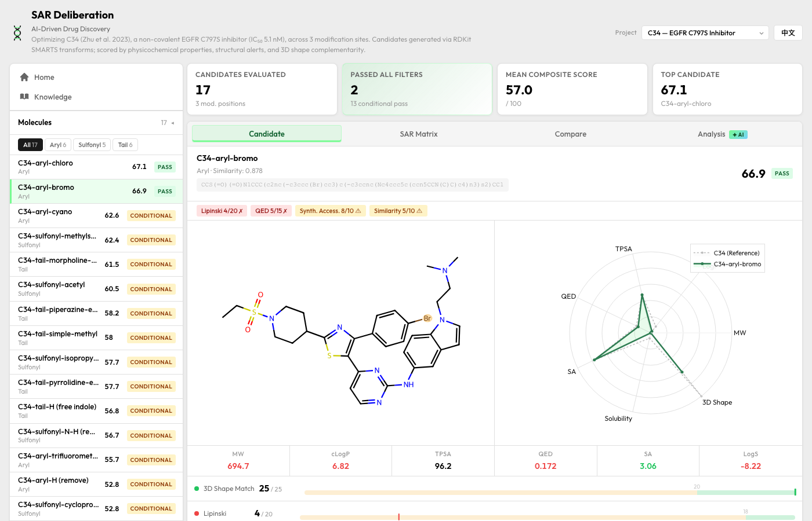
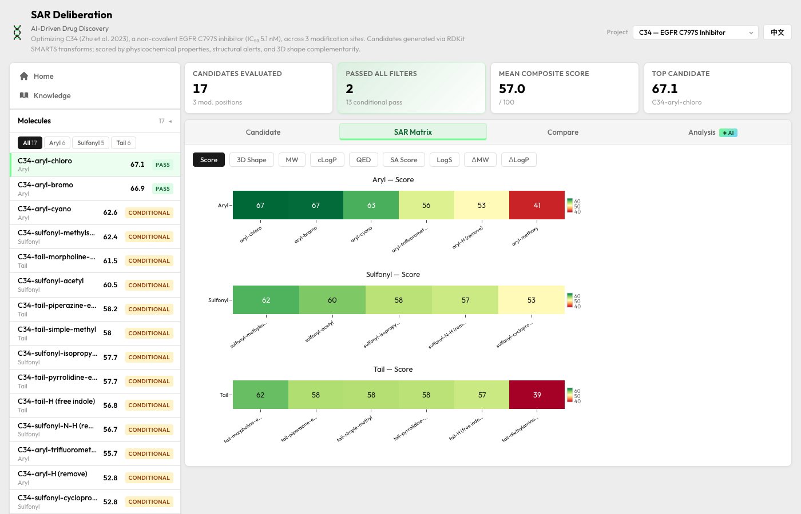
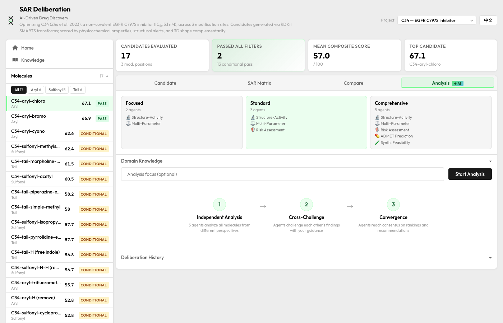

先导化合物优化 · 多 Agent 决策辅助
我注意到一个数字——给同一组分子数据，两位资深药物化学家做出相同决策的概率：
Lajiness 2004, Pharmacia/Lilly · Kutchukian 2012 (Novartis) 重复实验一致性更低 (<10%)
合成一个化合物要 $5K–50K，花 2–6 周。先导优化每轮从几十个方向里选 5–10 个来合成。选错一个，丢掉的是一整轮迭代周期。
做这个选择用的工具？2026 年了，还是 Excel。
Deloitte：仅 11% 药企完成数字化转型 · Schrödinger 目标 2030 年 50% 采用率（意味着现在远低于此）
我想搞清楚这个环节为什么一直没有好用的工具。
LiveDesign 被 Top 20 药企里 19 家用着。数据能看到了，但怎么从数据做出更好的选择，还是靠个人经验。
一百多亿美金砸在分子生成和 ADMET 预测（最新的 Latent-Y 已在抗体设计中做到 AI agent 从文本到实验验证）。但化学家每天头疼的——十几个参数打架时怎么取舍——还没什么工具能帮上忙。
Kutchukian 2012 发现化学家只用 1–2 个参数在决策，自己不知道。这种没标准答案的问题，论文不好发，产品不好做。
所以"从已有候选里选哪个来合成"这一步，到现在还没有特别好用的工具。
能发论文、能benchmark的问题，钱和人自然会过去。这个问题不好量化，所以一直没人做。
翻文献的时候找到了这篇。2025 年 Sanofi 让 92 名化学家对同一批化合物做预测，发在 J. Med. Chem. 上：
| 决策模式 | 效果 |
|---|---|
| 个人判断 | 基线 |
| AI 模型 | 多数不如个人（除 hERG 外） |
| 集体智慧（多人独立判断后聚合） | 优于个人和大多数 AI |
| 集体智慧 + AI 混合 | 最优 |
结论挺明确：多个人分别独立看数据再汇总，比一个人拍脑袋强，也比多数 AI 模型强。问题出在决策过程上。
但你不可能每次决策都叫 92 个人来。
我的想法很直接：既然多人独立判断再汇总效果好，那能不能用 agent 来模拟？让多个 agent 各看同一份数据，独立分析，互相挑战。科学家看到多方争论的过程和分歧点，自己拍板。
为什么这么分？Kutchukian 2012 发现化学家决策时主要在三件事之间拉扯：
押已有的最优解、试新方向、还是先排掉风险高的。每个 agent 替你把一个方向想透。
标准 3 个，全面模式可扩展至 5 个（+ ADMET 预测、合成可行性）
审议流程
各个分析框架独立看数据，各出各的结论
拿分子证据互相质疑，科学家可以中途介入
哪些达成共识、哪些还有分歧，建议下一步实验方向
3 个 prompt 不同的 LLM 跟 92 个真人的独立判断是不是一回事？说实话我也不确定。但跑 demo 的时候发现，三个 agent 确实会在一些化合物上吵起来，不是换个说法表达同一个意思，是真的看法不一样。三个分析视角（Exploitation / Exploration / Risk）是从文献里提取的化学家决策维度（Kutchukian 2012），不是拍脑袋分的。
第一版跑下来有个问题：agent 一次性输出结论，看着流畅但经不起追问——没有文献支撑的判断，跟 ChatGPT 随便写一段没区别。
所以在每个 agent 内部加了三步推理，参考了 DeepResearch 的 ReAct（Reason-Act）思路——不是一次性吐结论，而是先想清楚要查什么，查完再下判断：
只看分子数据，列出 3-5 个需要查文献才能回答的问题。这一步只提问，不给结论。
带着问题查 23KB 领域知识库，引用具体来源（论文名 + 数据点）。查不到的标"无直接证据"。
基于第二步查到的证据写正式分析，每个判断要能追到具体文献。
R2 交叉质疑同样三步：识别分歧 → 验证证据 → 发起挑战。
只有最终结论传给下一轮——中间推理过程在前端能看到，但不塞给其他 agent，让每轮讨论聚焦在结论上。
效果：分析从"看着合理的泛泛而谈"变成"引用 [Zhu 2023 Table 2] 说明 para 位氟代使 IC50 下降 3 倍"。每个 agent 的卡片里可以展开看它是怎么一步步想的。
注：agent 的引用不是自由发挥的——23KB 的论文原始数据在 Investigate 步骤直接喂给它，引用从这里面来，不是瞎编。
药企科学家 15-25% 的时间花在找信息上（IntuitionLabs）。光把数据摆出来不够，得让知识参与到分析里。
知识分两层，用法不一样：
靶点、骨架、已知 SAR 规律的压缩摘要。agent 从一开始就知道这个项目在做什么。
4 篇论文的 SAR 数据、binding mode、PK 参数。agent 带着具体问题去查，不是一股脑塞进去。
科学家也可以在跑分析前贴自己的笔记或论文摘要，agent 会跟着你给的方向走。
下一步：接 ChEMBL 等公共数据库，让 agent 能查到更广的活性数据。
输入一组 SAR 数据和项目文献，三轮跑完会给出：每个 agent 各自的分析（推理过程可以展开看）、agent 之间的分歧点、以及一份排好优先级的合成建议。科学家可以随时改方向，也可以贴自己的判断进去。

单分子评估 · 结构差异 + 雷达图
SAR 热力图 · 按修饰位点分组
多 Agent 分析 · 策略选择 + 三轮审议demo 跑下来，agent 之间确实会吵——不是客气地"各有道理"，是在具体化合物上有真分歧。加了文献后分析也深了不少。不过离真正能用还差一截。
同靶点已有化合物的活性数据，比论文更结构化。Agent 分析时有真实 benchmark 可以对比。
追踪科学家翻了哪些建议、采纳了哪些——科学家的实际选择反过来帮 agent 学会更好地判断。
接入实验结果反馈，跨轮次追踪 SAR 趋势变化。从"每次单独分析"变成"跟着项目一起走"。
我不是药化背景。但这个问题往下挖，其实是认知问题——人脑同时权衡十几个参数的能力有限，碰巧这个问题发生在药化场景里。我能做的是把决策过程结构化，让领域专家的判断有更好的支撑。
当前状态：可运行 demo，EGFR C797S 数据集（Zhu et al. 2023），已实现 ReAct 多步推理 + 23KB 知识库注入 + 用户上下文输入。
| 论文 | 年份 | 核心发现 |
|---|---|---|
| Lajiness et al. | 2004 | 化学家自我一致性 50%，同行一致性 28% |
| Kutchukian et al. | 2012 | 化学家仅用 1-2 参数决策且不自知 |
| Choung et al., Nature Comms | 2023 | 35 人标注 kappa 0.32-0.4，专家直觉正交于计算指标 |
| Llompart et al., J. Med. Chem. | 2025 | 92 人实验：集体智慧 > 个人 > 多数 AI |
| Truebel & Seidler, Nat Rev Drug Disc | 2022 | 117 名药企高管确认认知偏差是系统性问题 |
| 系统 | 来源 | 关键结果 |
|---|---|---|
| Coated-LLM | iScience 2025 | 多智能体辩论准确率 0.82（vs 0.52），实验验证新疗法 |
| AI Co-Scientist | Google 2025 | generate-debate-evolve，靶点经实验确认 |
| ChatInvent | AstraZeneca 2026 | 大药企已部署 multi-agent 分子设计 |
| Virtual Biotech | Stanford 2026 | 11 agent 分析 55,984 临床试验 |
| Latent-Y | Latent Labs 2026 | AI agent 自主设计抗体，6/9 靶标实验验证，56× 加速 |
注：上述系统做的是分子生成（"造什么"）。本系统做的是候选选择（"造了之后选哪个先合成"）——同一条流水线上的不同环节。